Андрей Карташёв
Портфолио
Portfolio
Artist Statement
Скачать портфолиоМоя живопись разворачивается в плоскости, которую я воспринимаю не как ограничение, а как сцену. Меня интересует не реализм, а образ как символ — театральная фигура, существующая между внешним и внутренним миром.
В этом подходе для меня важны отсылки к древним наскальным изображениям и египетскому искусству: ясность формы, знаковость, фронтальность, условность. Однако эти исторические ориентиры становятся не стилизацией, а способом говорить о современном и личном опыте.
Я являюсь учредителем и идейным вдохновителем декорационной компании «Опора Красного», создающей визуальные миры для кино. Этот опыт напрямую влияет на моё художественное мышление. Я воспринимаю изображение как сценическое пространство, где фигуры, предметы, цвет и линия работают как элементы декорации.
Я работаю преимущественно с акрилом. Моей манере свойственны эскизность, насыщенный цвет, динамичная линия и открытая условность формы. Образы в моих работах часто балансируют между комическим и серьёзным, наивным и символическим, декоративным и психологическим.
Один из ключевых мотивов моей практики — птицы. Через них я говорю о человеческом состоянии: уязвимости, свободе, характере, одиночестве, наблюдении. Образ совы становится метафорой человека во всём его разнообразии — от смешного до трагического, от бытового до сакрального.
В серии религиозных сюжетов я обращаюсь к каноническим сценам, опираясь на византийскую традицию, но переосмысляю её через наивную пластику, яркую цветовую палитру и личную интонацию.
Параллельно я занимаюсь пчеловодством. Пасека в Тверской области стала для меня пространством наблюдения за природными циклами, временем и изменениями. Этот опыт усиливает моё восприятие мира как живого, ритуального и символического.
Садко
Sadko
2025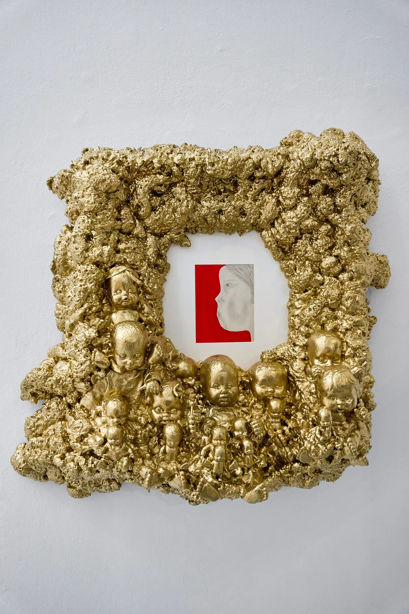
Чернавушка
Сова
Owl
2026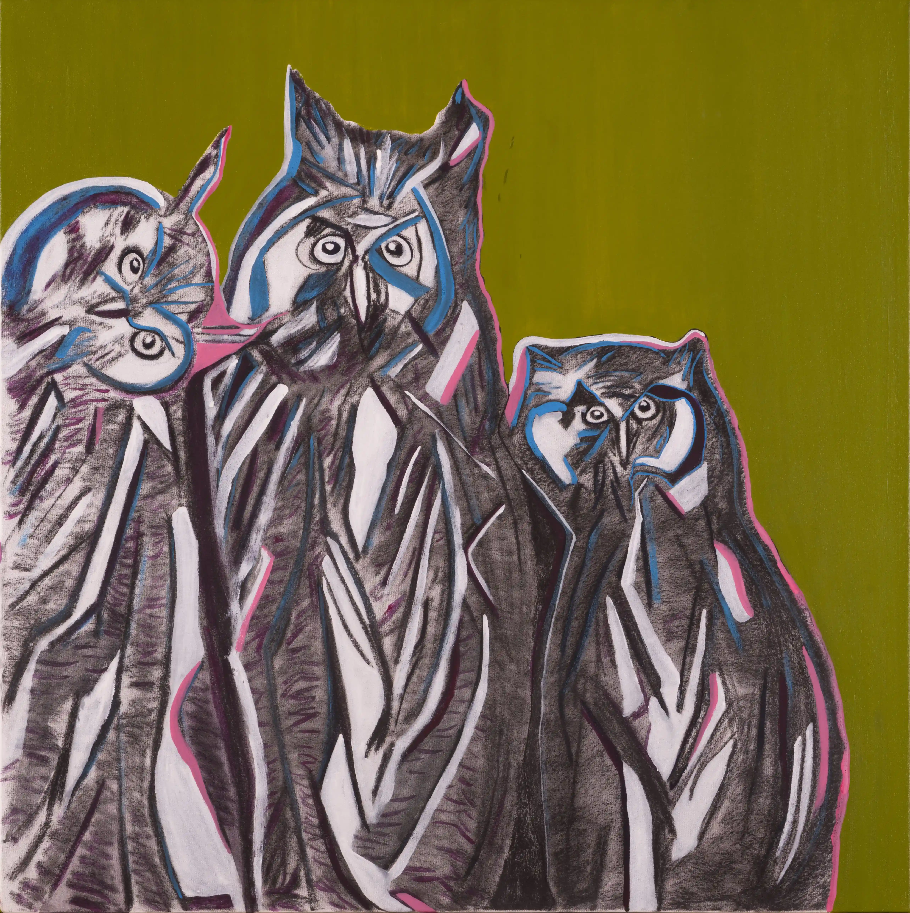
Камень

Триптих «Пространство и время»

Синий Камень
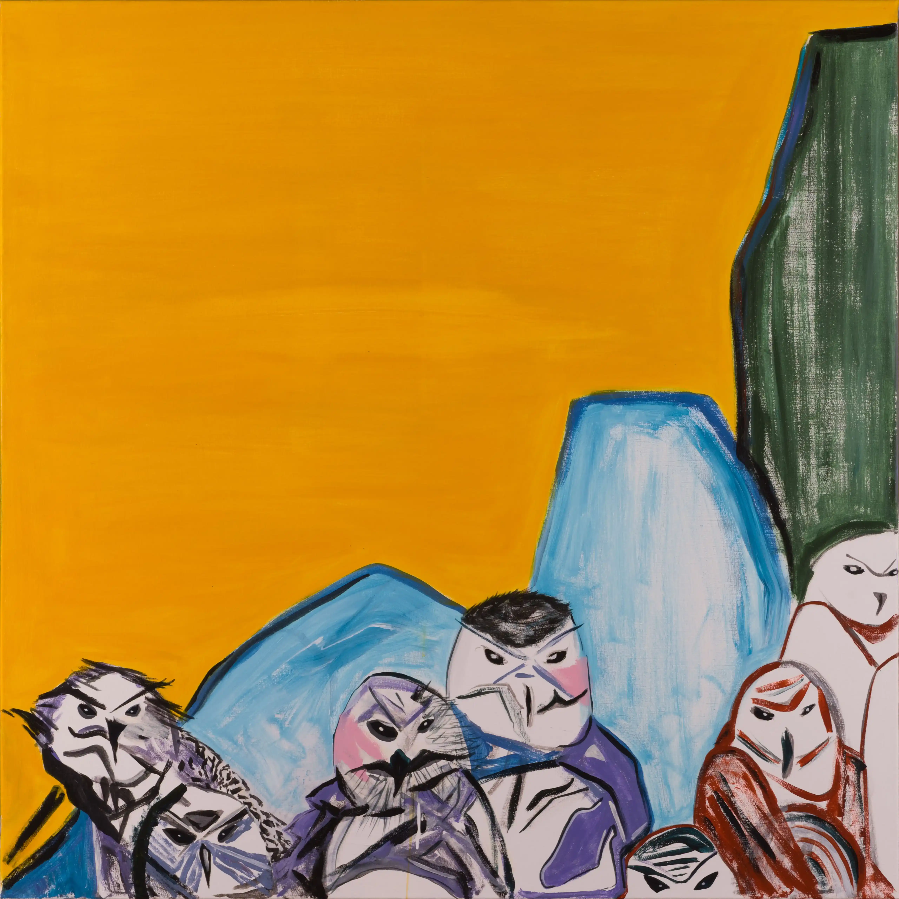
Горцы
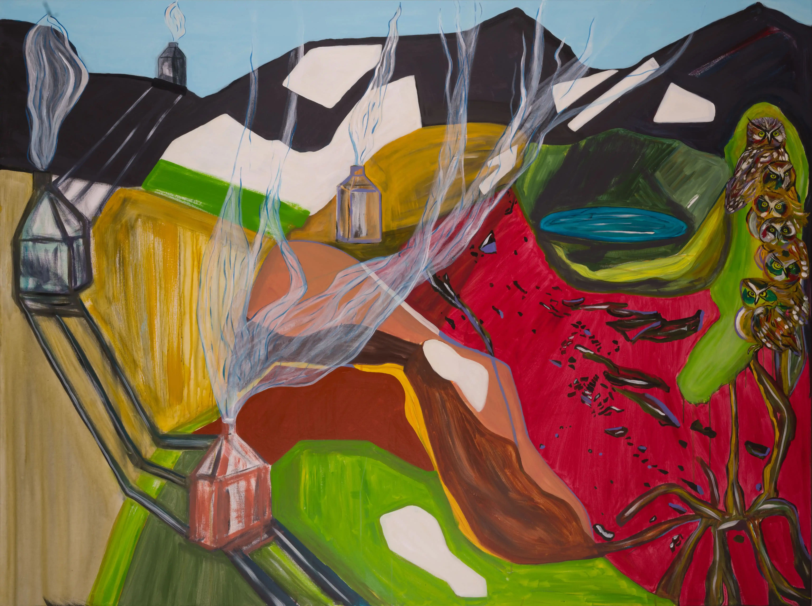
Стремление
Лоси
Moose
2022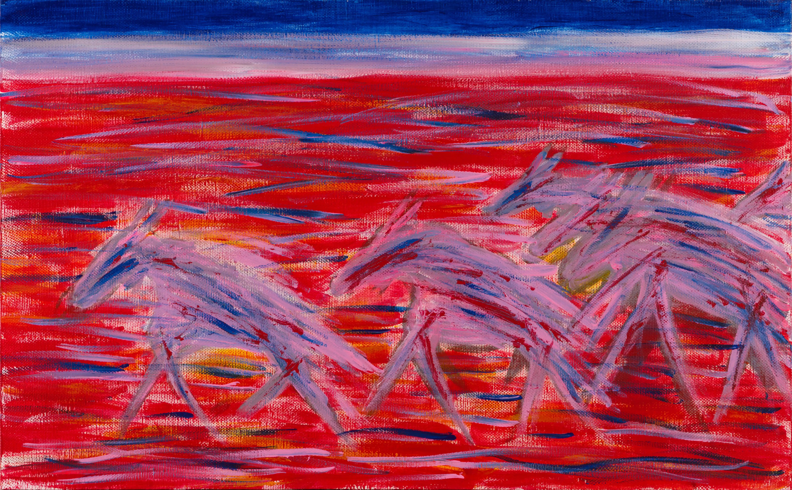
Бег
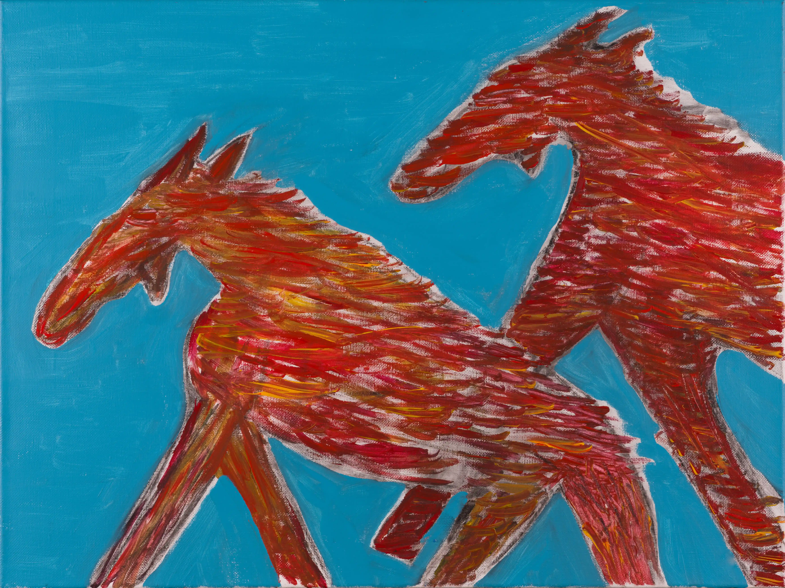
Оттепель
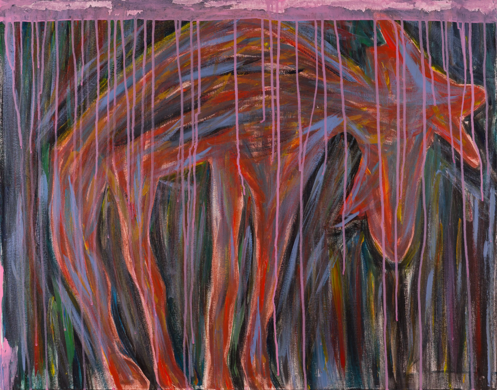
Дождь
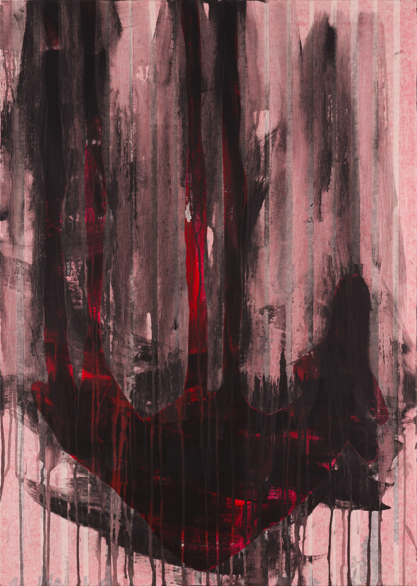
Дух
Нео Иконография
Neo Iconography
2022–2025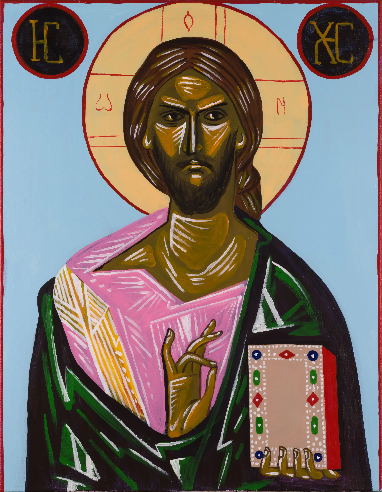
Пантократор
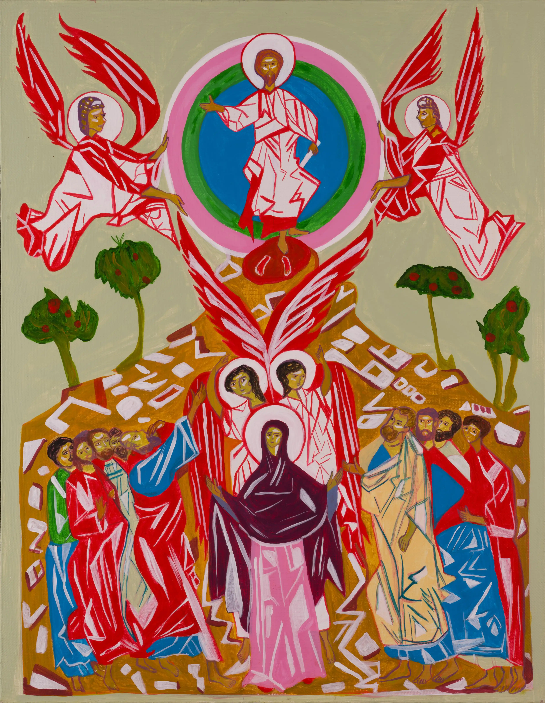
Вознесение

Вход Господень в Иерусалим

Троица Ветхозаветная
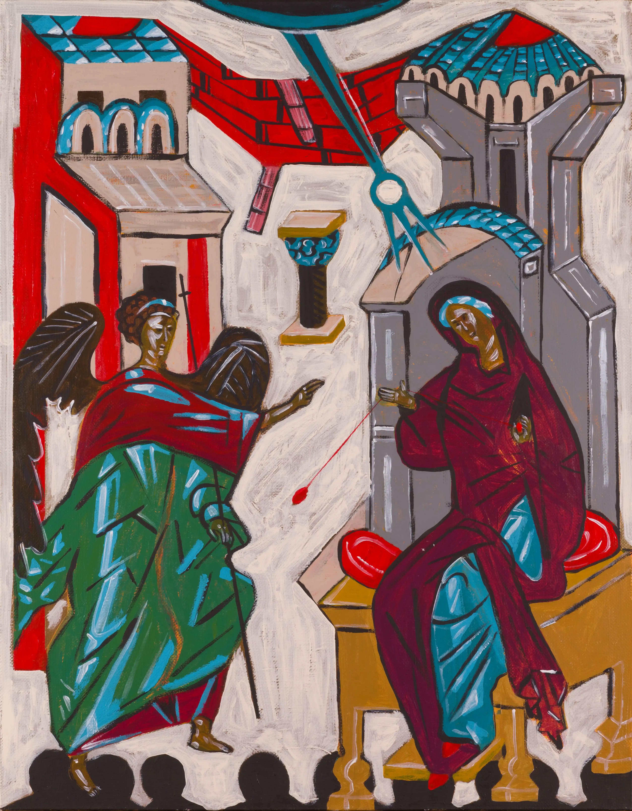
Благовещение
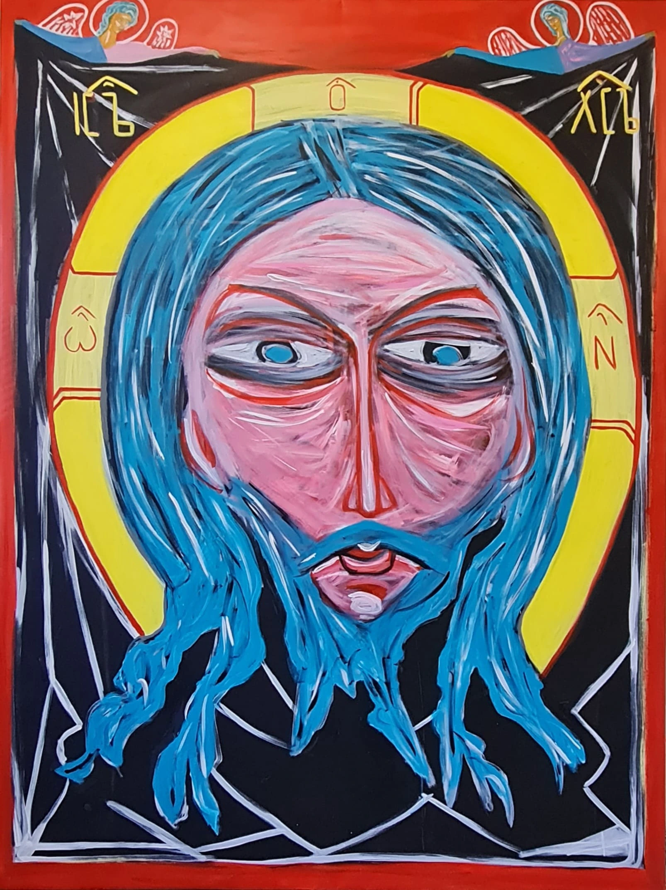
Спас